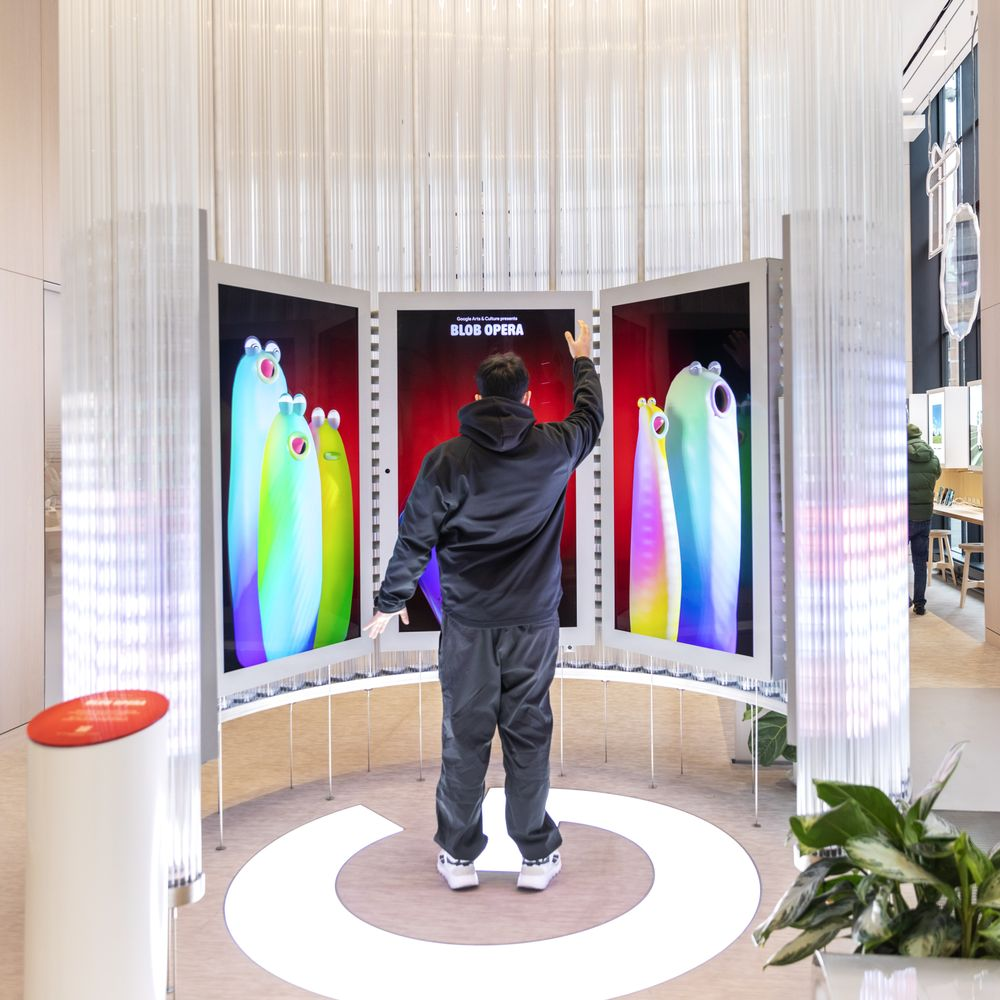

Google Blob Opera
New York City
Seamlessly translated a web-based experience into a physical exhibit inside the Google Store in New York City.
Role
Creative Director
Lead Designer
Client
Agency
Deeplocal
Shipped
October 2021
Google came to Deeplocal to create an unforgettable, hands-on experience that introduced store visitors to the world of Blob Opera while reinforcing Google's commitment to innovation and creativity.
Blob Opera is an interactive web experiment created by Google that allows users to compose and perform operatic music with four singing colorful blobs. Users can control the pitch and tone of each blob with their computer mouse to create harmonious and playful musical compositions.
As the lead UX designer on the project, my role involved conducting user research, creating user-centered concepts, designing user flows and interactions, ensuring accessibility, and designing light animations for auxiliary screens.
Final designs

